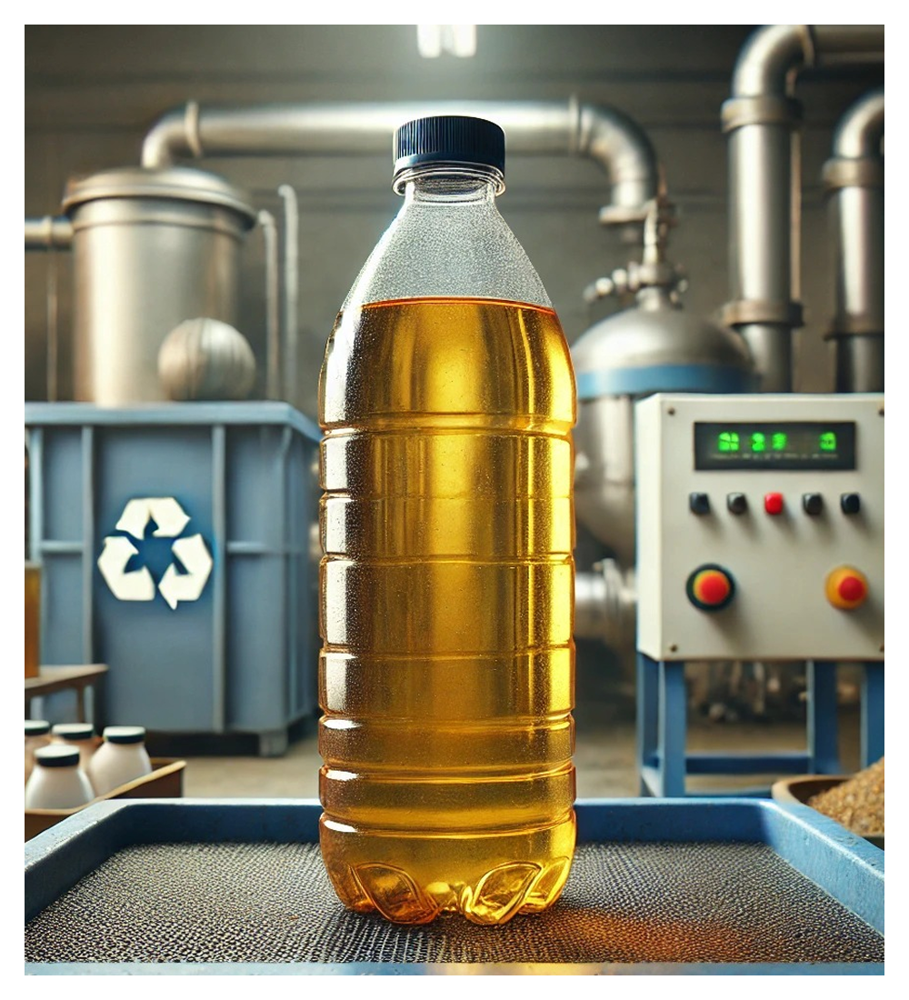
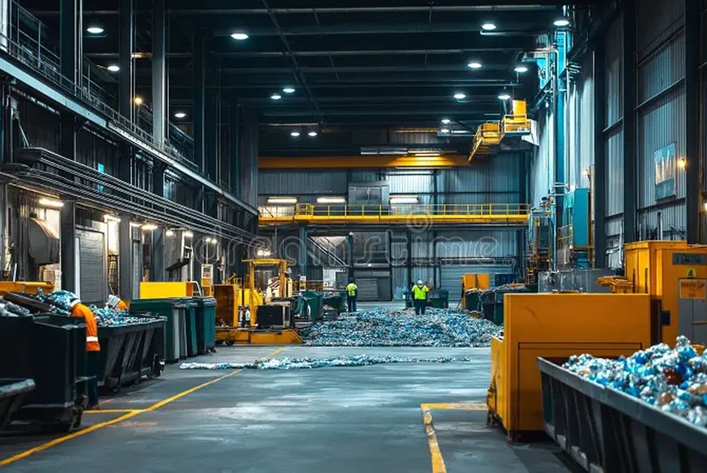
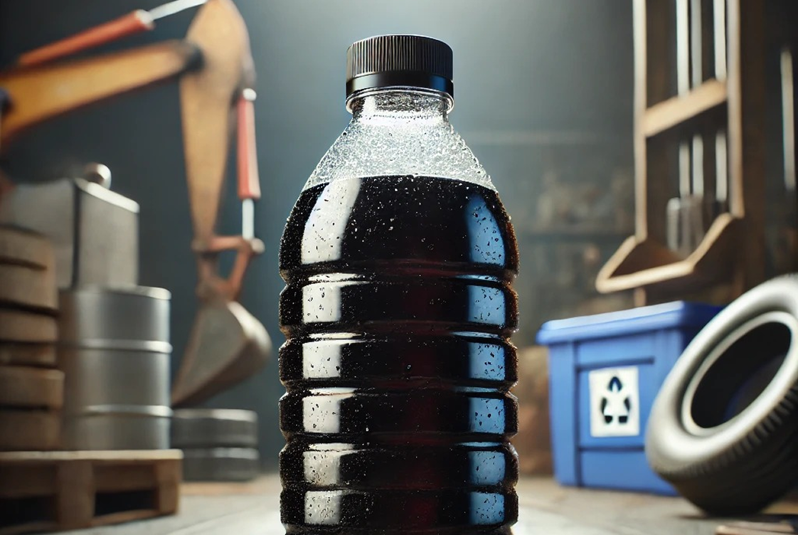

01

Waste Oil Collection
Collection solutions for used and waste oil generated by industrial and commercial operations.
Learn about Waste Oil CollectionGreen Way Industries provides responsible waste oil collection, recycling, disposal and industrial waste management solutions for businesses across Tamil Nadu.

Green Way Industries provides waste oil collection, recycling, disposal and industrial waste management solutions for businesses that need a responsible way to manage used and industrial waste.
Our approach combines collection, transportation, handling, processing and documentation to support safer waste management and responsible resource recovery. We work with industrial facilities across relevant sectors to streamline waste operations while maintaining safe handling standards.
Years of Experience
Processing / Operational Units
Industrial Clients Served
Waste Collections Completed
A structured framework guiding how we handle, process, and recover industrial waste materials responsibly.
Make importance about waste management to our customers and provide practical solutions through safe handling and structured processes.
Protect natural environments through responsible service delivery and support the conservation of petroleum resources.
Direct suitable waste streams toward recovery and recycling to support a more sustainable industrial future across Tamil Nadu.
Green Way Industries provides collection, recycling, disposal and management solutions tailored to the operational requirements of businesses and industrial facilities.
Collection solutions for used and waste oil generated by industrial and commercial operations.
Learn about Waste Oil Collection
Responsible recovery and recycling of suitable waste oils.
Learn about Waste Oil Recycling
Waste oil disposal solutions focused on responsible handling and environmental protection.
Learn about Used Oil Disposal
Recovery and processing options for suitable used-oil streams.
Learn about Used Oil Recycling
Management and recycling solutions for used transformer oil.
Learn about Used Transformer Oil RecyclingCollection and responsible management of used hydraulic oil.
Learn about Used Hydraulic Oil Management
Collection, handling and processing of spent industrial oils.
Learn about Spent Oil Management
Transportation solutions for applicable hazardous industrial waste streams.
Learn about Hazardous Waste TransportationWaste-management support for applicable marine and ship-generated waste streams.
Learn about Marine & Ship Waste Management
Integrated Facility ProgramsIntegrated waste-management support for industrial facilities across Tamil Nadu, assisting businesses with safe containment, transportation, and responsible processing.
A structured approach to helping businesses manage used oil and industrial waste responsibly.
Focus on systematic collection, safe handling, and responsible waste management.
Solutions designed around the operational requirements of industrial and commercial customers.
Where suitable, waste streams can be directed toward recycling and resource recovery.
Support across relevant stages of collection, transportation, processing and waste management.
A structured approach to helping businesses manage used oil and industrial waste responsibly.
A clear 5-stage overview of how waste oil and industrial waste materials move from collection to responsible management.
Request Waste Oil CollectionUnderstand the type, source and quantity of waste.
Arrange collection according to the waste stream and operational requirement.
Move the collected material through the appropriate handling and transportation process.
Suitable waste streams are processed, recycled or otherwise managed according to their characteristics and applicable requirements.
Maintain appropriate documentation and responsible waste-management practices.
Green Way Industries supports waste-management requirements across industrial and commercial sectors, including manufacturing, automotive, electrical and power, engineering, marine and other businesses generating used oil and industrial waste.
Industrial machinery lubricants, cutting fluids & spent hydraulic oil.
Used engine oil, transmission fluids, gear oils & fleet maintenance waste.
Decommissioned transformer insulating oils and substation dielectric fluids.
Metalworking coolants, machining lubricants & industrial fluids.
Vessel slop oil, bilge waste water, shipboard lubricants & engine room runoff.
Heavy equipment oils, hydraulic fluids & generator maintenance waste.
Green Way Industries follows applicable requirements and maintains appropriate documentation and processes for its waste-management operations.
We support industrial facilities by ensuring safe handling, disciplined consignment records, and adherence to environmental standards throughout collection, transportation, and processing.
Green Way Industries supports waste oil and industrial waste-management requirements across Tamil Nadu, with operations serving industrial and commercial customers in relevant locations.
Corporate Office: Suscon Builder, 53rd Street, Ashok Nagar, Chennai, Tamil Nadu – 600083
Processing Plant: Plot No: 101-104, SIDCO Industrial Estate, Venmaniathur & Pattanam Village, Tindivanam Taluk, Villupuram District, Tamil Nadu – 604207
Industrial Hubs & Coverage Areas:
Clear answers to common questions about our waste oil collection, recycling, and industrial waste management services.

Our waste-management team can answer questions regarding waste types, collection logistics, and documentation.
Call +91 93600 36055Green Way Industries can support the collection and management of suitable used and waste oil streams generated by industrial and commercial operations. Requirements depend on the type and condition of the material.
Yes. Businesses can contact Green Way Industries to discuss their waste type, approximate quantity, location and collection requirement.
Green Way Industries provides recycling and resource-recovery solutions for suitable waste oil streams.
Green Way Industries serves industrial and commercial waste-management requirements across Tamil Nadu.
Businesses can contact the waste-management team and provide the waste type, approximate quantity, facility location and preferred collection frequency.
Yes, the company provides industrial waste-management services for applicable waste streams. The exact solution depends on the type and characteristics of the waste.
Tell us about your waste type, approximate quantity, facility location and collection requirement. Our team can discuss the appropriate waste-management solution for your business.
Tell us about your waste type, approximate quantity, facility location and collection requirement.